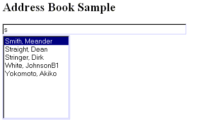

|
| ||
|
| ||
Jeff Sandquist
Microsoft Corporation
April 26, 1999
The following article was originally published in the MSDN Online Voices "Servin' It Up" column.
 Download the source code for this article (zipped, 1.38K)
Download the source code for this article (zipped, 1.38K)
This month we will blur the lines between the client and the server by introducing you to Microsoft® Remote Scripting. Remote Scripting enables you to create an application in which the browser can call scripts on the server without needing to reload the entire page. In this article you'll learn how to use Remote Scripting to streamline your applications, making your Web site quicker, richer, and more responsive. To learn more about Remote Scripting, check out Andrew Clinick's recent Scripting Clinic column.
You are developing a cross-browser application and would like it to display a Select box containing the names of all of your employees.
Your SQL Server database has a table containing the names of your 10,000 employees. For your user, loading the entire table into the Select box would cause a huge performance drain: they would have to wait while the page downloads information they don't need. Instead, you would like to serve only the first 10 records, and then send additional records based upon the context of a user's input. So, if the user types the letter "S," the table will alphabetically list the first 10 records of those employees whose last name begins with that letter. The output to the user's browser would look like this:

You could use Microsoft Remote Data Service (RDS) to load the table, but the problem is that your application needs to work with both Netscape Navigator 4.x and Internet Explorer 4.x. Your best solution is to leverage the flexibility of Microsoft Remote Scripting.
Remote scripting gives you the ability in Web applications to combine two scripting platforms in one page. You can create client script to control an application's user interface. At the same time, you can run script on your server to perform server-side tasks, including database queries, middle-tier business logic, and the like. Because remote scripting runs on the server while the client page is still active, your scripts are greatly simplified and the application can present a richer, more responsive interface to the user.
Requirements
Our application will consist of two files: RSClient.htm and Server.asp. You will also need the following files:
· RS.asp, which contains methods called from your .asp file to initialize remote scripting on the server side and to dispatch to the appropriate function in your page.
· RS.htm, which contains the methods you use in your .htm file to initialize remote scripting, execute remote procedures, check the status of remote calls, and get method results.
· Rsproxy.class, which contains the Java class files (object code) for the applet that communicates between client and server pages.
These files are part of the Microsoft Remote Scripting download . The files need to be copied to a folder called _ScriptLibrary immediately below the virtual root of your server or project. If you use Visual Interdev 6.0™, these files are automatically copied to your server as part of the Visual Interdev 6.0 Script Library.
. The files need to be copied to a folder called _ScriptLibrary immediately below the virtual root of your server or project. If you use Visual Interdev 6.0™, these files are automatically copied to your server as part of the Visual Interdev 6.0 Script Library.
You will also need Internet Information Server (IIS), Active Server Pages (ASP) and ActiveX® Data Objects (ADO). The Microsoft Windows® NT 4.0 Option Pack will install all necessary files.
will install all necessary files.
Create a system data source name (DSN) that references the database. A System DSN stores information about a data connection in the Windows Registry of the computer on which the DSN was created.
Your application will connect to the Microsoft SQL Server Pubs sample database. On your Web server double-click the ODBC icon in Control Panel and click the System DSN tab to create and add a new System DSN with the name "Pubs" that points to the Pubs database.
Let's Write the Code!
Copy the following code into an HTM file called RSClient.HTM. We call the refresh_list function in the <BODY> on load event. The routines required to use remote scripting from client script are contained in the file Rs.htm. We include this file using a Microsoft JScript include.
<HTML> <HEAD> <META NAME="GENERATOR" Content="Microsoft Visual Studio 6.0"> <TITLE>Servin' It Up with Remote Scripting</TITLE> <BODY onload="refresh_list()"> <SCRIPT Language="JavaScript" src="_scriptlibrary/rs.htm"> </SCRIPT>
We will display a title and an HTML form. The form will consist of an INPUT box and a SELECT box. The INPUT box calls our JScript refresh_list function on the onkeyup event.
<H2>Address Book Sample</H2> <FORM id=form1 name=form1> <INPUT type="text" size="50" id=Myname name=MyName onkeyup=refresh_list()><br> <SELECT id=NameList name=NameList size=10> - One Moment Please ----------------------------------------------------------------------</SELECT> </FORM>
Using Microsoft JScript code, we make a call to the Remote Scripting method RSEnableRemoteScripting , enabling Remote Scripting on this page. We also create our refresh_list JScript function.
, enabling Remote Scripting on this page. We also create our refresh_list JScript function.
<SCRIPT LANGUAGE=javascript> <!-- RSEnableRemoteScripting();function refresh_list() {
We define two variables serverURL and DisplayLength.
var serverURL = "server.asp"; /* Filename of our server-side script */
var DisplayLength = 10 /* Maxinum number of records to return */
We use Dynamic HTML to set the length of our SELECT box to 0 and then set it to the value of DisplayLength variable.
document.form1.NameList.length = 0
document.form1.NameList.length = DisplayLength
We retrieve the value of our textbox and pass it to our server side function with Remote Scripting's RSExcute method.
method.
var inValue = document.form1.MyName.value; var myVar = RSExecute(serverURL, "myFunction", inValue, DisplayLength);
The remote script returns a JScript object with the first and last names of our employees. A colon separates each record. We parse these entries using the Microsoft JScript split method and store the entries in an array.
We loop through the array and populate our list box with the contents of the array. Finally, we close out our <SCRIPT> and <HTML> blocks.
var myArray = myVar.return_value.split(":");
for (i = 0; i < 10; i++)
{
var myOpt = new Option
myOpt.value = myArray[i];
myOpt.text = myArray[i];
if (i < myArray.length)
{
document.form1.NameList.options[i] = myOpt;
}
}
document.form1.NameList.options[0].selected = true;
}
//-->
</SCRIPT>
</BODY>
</HTML>
Now to the server side (my favorite part). We create an Active Server Page called server.asp. This page contains a server side JScript function that queries our database using ActiveX Data Objects (ADO).
We leave the default language as Microsoft Visual Basic® Scripting Edition and include the RS.asp file. If we had set the default language for our page to JScript our remote scripting include file would have been processed after our function. This would have caused all sorts of errors with our code. See "Server Q & A - Why does the order of ASP execution seem to be so random?" for more information on execution order of Active Server Pages.
We call Remote Scripting's RSDispatch method to initialize remote scripting. The RSDispatch call must be the first server script that is run on that page.
method to initialize remote scripting. The RSDispatch call must be the first server script that is run on that page.
<%@ LANGUAGE=VBSCRIPT %> <!--#include file="_ScriptLibrary/rs.asp"--> <% RSDispatch %>
We create a public_description object and list the methods that we want to expose to our client page.
<SCRIPT Language=JavaScript RUNAT=SERVER>
function Description()
{
this.myFunction = myFunction;
}
public_description = new Description();
Now that the initialization has taken place and our JScript public description object has been created, we can create the function that we call from our client script. We will write our function using Server Side JScript. Our procedure accepts two parameters: the number records we would like to return (numLength) and our sort parameter (strInput).
function myFunction(strInput, numLength)
{
We instantiate an ADODB Connection object, open a connection to our database and we then instantiate our recordset object. You will want to make sure that you modify the connection string so that it is valid for your environment.
var objConn = Server.CreateObject("ADODB.Connection");
objConn.Open("dsn=pubs;uid=sa;pwd=;Network=DBMSSOCN");
var objRS = Server.CreateObject("ADODB.Recordset");
We set the MaxRecords property with the number of records we would like to return to our client.
objRS.MaxRecords = numLength;
We also use a SQL Select statement to return the first and last names of our employees. We refine this to be the names of the people beginning with whatever key(s) have been typed into our textbox, we also sort these into alphabetical order. Thank you Transact SQL for making this so easy!
objRS.Open("SELECT au_lname, au_fname FROM Authors Where (au_lname + ', ' + au_fname) >= '" + strInput + "' ORDER BY au_lname,
au_fname", objConn, 0, 3);
var tmpMsg = new String;
tmpMsg.value = "";
We loop through our recordsets until we reach the end of the database. We concatenate the first and last names retrieved and separate each record with a colon.
while (!objRS.EOF)
{
tmpMsg.value = tmpMsg.value + objRS("au_lname") + ", " + objRS("au_fname") + ":";
objRS.MoveNext();
}
The final step is to close the connection to our database, return the resultset to our client script, and finally close up our <SCRIPT> block.
objConn.Close();
return tmpMsg.value;
}
</SCRIPT>
By using Remote Scripting, we've effectvely blurred the lines between the client and the server. Our application utilizies the power of client code to handle formatting and validation and relies upon the cross browser compatibility of server side code.
The previous code can be used as a framework for a variety of Remote Scripting applications. For additional information on troubleshooting your Remote Scripting code see Checking for Errors on the MSDN Scripting Web Site
on the MSDN Scripting Web Site .
.
This month I'd like to thank my teammate (and proud new Dad) Doug Rothaus. Doug was the man behind the code this month. Thanks, Doug, for making me look smart!
Jeff Sandquist is one of Microsoft's finest Canucks, and is a member of the Active Server Pages Escalation Team at Microsoft Developer Support.Did you find this material useful? Gripes? Compliments? Suggestions for other articles? Write us!
© 1999 Microsoft Corporation. All rights reserved. Terms of use.